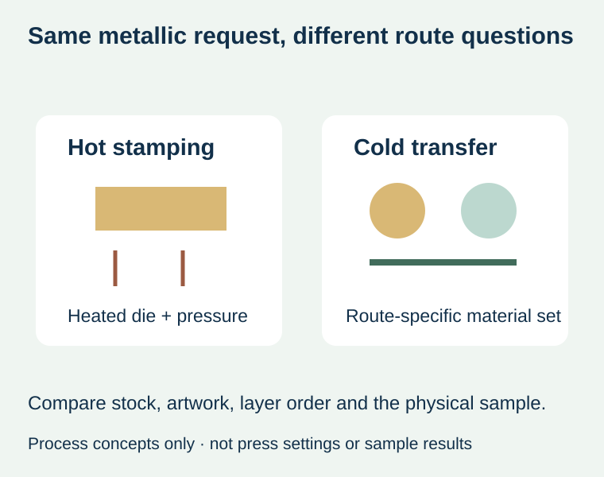
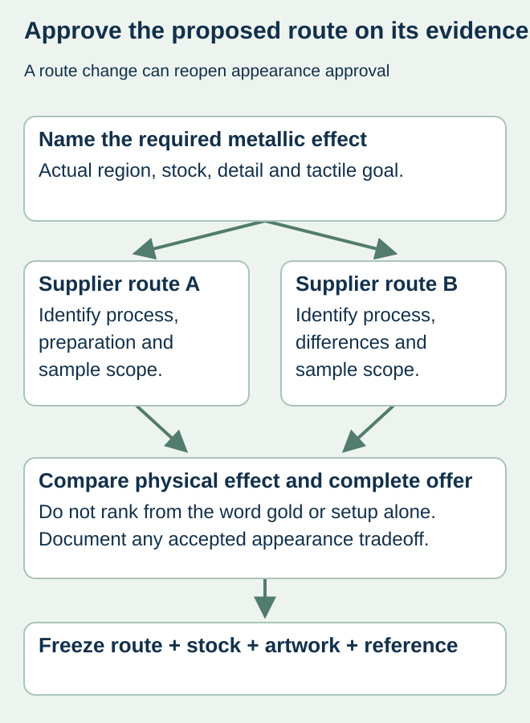

A winery approves a gold foil reference, then receives a quote that substitutes cold transfer for hot stamping. Both descriptions contain “foil,” but the preparation, supported stock, overprinting and tactile expectation may differ. The word gold does not establish that the two offers reproduce the same approved result.
Ask which physical effect matters and have the converter identify its exact proposed route on the intended stock. Compare production-representative samples for the actual design. Neither process name is a universal quality ranking or proof that a particular press can supply it.


Understand the process distinction without prescribing settings
KURZ’s hot-stamping explanation describes transfer using a heated die and defined contact pressure. Its cold-transfer overview describes different sheet-fed and narrow-web routes, with substrate, adhesive and transfer-material choices specific to the process. Those distinctions support a route-specific quotation; they do not authorize copying another machine’s materials or settings.
A buyer should not infer embossing depth merely from the word hot, or assume that cold transfer needs no preparation. If raised or recessed features are required, name that effect separately and ask how the offered route produces it. Keep any additional finishing operation and associated preparation visible.
Use the actual design as the comparison specimen
| Requirement | Identify before comparing | Why the route matters |
|---|---|---|
| Metallic region | Crest, fine text, large area or another marked feature | One demonstration motif may not represent the design |
| Stock | Actual paper/film and relevant texture | A sample on another face is not the same proposal |
| Color arrangement | Plain metallic effect or intended printed colors over it | Overprint and layer relationships need an identified route |
| Tactile effect | Flat, relief or no tactile requirement | Metallic shine is not a depth specification |
| Preparation | Tooling, setup and repeat-order basis in the actual offer | Do not assume one route is always cheaper |
| Evidence | Sample identity and approved limits | A PDF cannot establish changing reflection or touch |


Make alternatives explicit rather than silently equivalent
For a hypothetical spirits label, the brand may mainly want a broad reflective accent with printed colors, while another design depends on a tactile crest on textured paper. These are different requirements to show the converter. They do not establish that either process automatically meets either brief; obtain the supplier’s supported proposal and representative evidence.
If a route changes after approval, identify what the earlier sample still represents and what requires a new review. Preserve fine positive strokes and reversed gaps in the actual feature coupon. The foil-detail guide covers that geometry; it should not be treated as proof that two different transfer routes yield the same appearance.
Compare a complete order, including the next run
Ask which costs apply once, which recur and what changes if the artwork or stock changes. A repeated foil crest may reuse some preparation only where the actual supplier confirms that arrangement. Keep component and artwork quantities attached to the quotation rather than comparing an isolated setup line.
The final choice should state the accepted effect, route, stock, sample and remaining conditions. A less expensive alternative can be useful when its disclosed difference is accepted. Calling it identical without evidence leaves the appearance decision open, even when the printed wording and nominal foil color are unchanged.
Discuss the unresolved label requirement
Send the actual wine-label artwork, stock preference, desired metallic region, tactile requirement and quantity by design. Ask the supplier to identify which finishing route and representative sample are actually offered. Prepare a label specification inquiry. The contact page opens an email draft and lists email or WhatsApp for attachments. Supply, proof options, testing, pricing and timing require project confirmation.